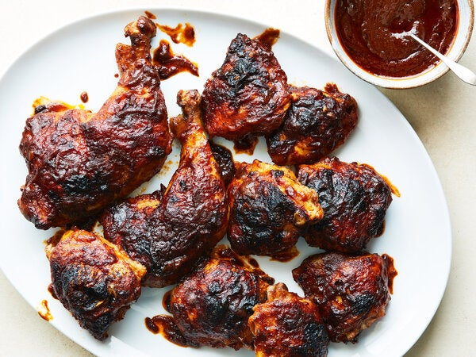

BBQ Chicken Recipe

Description
Lacquered with barbecue sauce, this juicy chicken swaps constant
flipping on the grill for a mostly hands-off process using the oven
and one smart trick: The dry-rubbed chicken roasts most of the way
on top of barbecue sauce. The resulting sauce becomes thickened and
glossy from the chicken's rendered fat. It's then spooned onto the
chicken and roasted until sticky, caramelized and rich with flavor.
Serve the extra sauce with dinner, for dipping chicken, or spooning
directly into your mouth. (For boneless barbecue chicken, try this
stovetop method.)
- 1(18-ounce) jar barbecue sauce, or 2 cups homemade barbecue sauce
- About 3 pounds bone-in, skin-on chicken leg quarters or thighs, patted dry
- 1tablespoon neutral oil (such as grapeseed)
- 2teaspoons store-bought or homemade chili powder
- 1teaspoon smoked paprika
- Kosher salt (such as Diamond Crystal)
- 1teaspoon apple cider vinegar
Steps for preparation
- Heat the oven to 425 degrees. Pour the barbecue sauce
into a 9-by-13-inch baking pan or dish, or a large skillet,
or another ovenproof vessel that fits the chicken snugly, then
shake so the sauce disperses into an even layer.
- In a large bowl, toss the chicken with the oil, chili powder,
paprika and 1 teaspoon salt until coated. Arrange the chicken,
skin side up, on top of the barbecue sauce. Roast until the chicken
skin is crisp, 30 to 35 minutes.
- Scrape the sides of the pan and stir the barbecue sauce to incorporate
the caramelized bits into the sauce. Turn the chicken to coat in the
sauce, arrange skin-side-up, then spoon sauce on top of the chicken.
Roast until the chicken is sticky and charred in spots, 10 to 15 minutes
more.
- ransfer chicken to plates. Stir the apple cider vinegar into the sauce
remaining in the pan. Serve the chicken with the extra sauce.
Additional Information
Preparation time estimated: 1 hour
Servings portions are for 4 to 6 people